第8章 高频数据分析
在之前所有章节中，我们分析的都是股票的日交易数据。这类低频数据具有等时间间隔的优良属性，这使它们的数学处理过程非常简便。但逐笔交易数据具备天然的非等时间间隔的特点，像报价单、交易讯号、交易所信息以及高频新闻订阅的更新频次具有极大的偶然性，未必遵从等时间间隔的规律。
但高频数据包含的信息众多，通过详细分析交易所传送的所有信息可以收集到众多关于市场微观结构的知识。绝大多数金融工具都支持一个交易日多次交易。一些高流动性的金融工具在一个交易日中甚至会更新数千万次市场信息和交易数据，其中大多数交易都发生在几微秒之间。比如 ETF基金SPY，其通常在一个典型交易日中会更新一千万到两千万次报价单。这一数字涵盖了人类交易者、投资算法以及交易所之间所有发送、调整和撤销报价单的行为，但其中仅有一小部分报交单会真正成交。这也是高频交易广受诟病的原因，高频交易中电脑网络之间发生的巨量信息交换行为最终只带来寥寥数据真实成交。
命名角度而言，报价单相关的价格变化、数量变化或者特定价格水平的头寸变化都被称为报价单更新。大部分做市商和高频交易员都会参考报价单顶部的报价信息，这一块区域包含了市场上最有价值的交易信息。
投资者既可以输入限价报价单，撤销或者调整报价单，也可以输入市价报价单。这些报价单通常会通过经纪商最终发送给集中托管所有证券交易报价单的交易所。交易所的交易撮合主机负责处理交易的撮合，并随后将报价单的撮合信息发送给相关方。一旦报交单发生有更新，交易所会立即将更新后的报价单传输给相关各方。交易者和交易系统会利用这些更新的市场数据和报价单来调整他们的投资算法。
细粒度或者说高频数据是很难获取的。收集此类数据通常意味着一个极其昂贵、耗时和复杂的过程。因此，大多数情况下，对冲基金、银行以及自营交易公司，会根据自身交易所涉及的对象与交易所进行直连，这样一来，可以更容易地进行数据的获取、过滤及实时储存工作。这些机构通常会构建一支由开发团队和IT人员组成的团队来致力于确保这些数据流的整洁、准确性及完整性。
在本章中，我们将探讨一些这类高频数据集。本书所用的高频数据集由Tick Data公司慷慨提供。数据已被处理为.csv 格式。理想情况下，这类数据应该储存在某个时间序列数据库里，以便于快速地基于符号、数据类型以及时间范围来抽取需要的信息。接下来，我们看下原始数据格式的数据。
高频报价数据
接下来，我们将应用 read.csv()函数，把提供的股票报价读入到主内存。
spy_file <- "path/Stocks/QUOTES/SPY_2013_04_15_X_Q.asc"
spy_quotes <- read.csv(file = syp_file,header = FALSE,stringsAsFactors = FALSE)对象spy_quotes是一个略大于1GB内存的数据框，该数据框包含超过720万行和21列。该数据框的前几行如下：
head(spy_quotes, 3)
## V1 V2 V3 V4 V5 V6 V7
## 1 04/15/2013 04:00:00.065 T 156.60 0.00 1 0 R
## 2 04/15/2013 04:00:00.626 P 0.00 0.00 0 0 R
## 3 04/15/2013 04:00:00.633 P 158.25 158.90 1 47 R
## V8 V9 V10 V11 V12 V13 V14 V15 V16 V17 V18 V19 V20 V21
## NA 1 T T 1 2 A C NA NA NA NA
## NA 2 P P 0 2 A C NA NA NA NA
## NA 3 P P 1 2 A C NA NA NA NA接下来，为数据框中的每一列赋予一个合适的名称：
names(spy_quotes) <- c("date", "time", "exchange", "bid_price",
"ask_price", "bid_size", "ask_size", "quote_condition",
"mode", "market_maker_id", "sequence_number", "bid_exchange",
"ask_exchange", "national_bbo_indicator",
"nasdaq_bbo_indicator", "quote_cancel_correction",
"quote_source", "short_sale_restriction_indicator",
"limit_up_down_bbo_indicator_cqs",
"limit_up_down_bbo_indicator_utp",
"finra_adf_mpid_indicator")以下是从Tick Data公司的文档中描述的各个字段对应的含义：
- Date：报价日期。
- Time：报价时间。该数字表示的时报价传输到CTS的时间。毫秒级别数据对应的时段分别是：NYSE和AMES自2006年2月7日以来的数据； NASDAQ自2005年5月5日以来的数据。
- Exchange：发出报价的交易所名称。比如，P表示Arca交易所。
- Bid Price：买入价被截断为八位数的隐含小数。
- Ask Price：卖出价被截断为八位数的隐含小数。
- Bid Size：买入规模以整批计数（每批100股）
- Ask Size：卖出规模以整批计数（每批100股）
- Quote Condition：报价发行的条件。例如，A指买入价的下滑。
- Mode：1/1/2004前如果可行的话，应用Sows Mode 。
- market_maker_id：只应用于Nasdaq。认清Nasdaq做市商要价的每个的标识。
- sequence_number： 只应用于NYSE。市场数据系统（MDS）序列数字。这个字段仅适用于NYSE 交易。如果它不属于NYSE 交易所或序列号码未能决定，它将包含数字0。
- bid_exchange：竞价起源的交易所。
- ask_exchange：询价起源的交易所。
- national_bbo_indicator令： 仅针对于Amex和NYSE的最佳买价和卖价。
- nasdaq_bbo_indicator：仅针对于Nasdaq的最佳买价和卖价。
- quote_cancel_correction：仅针对于Amex和NYSE。
- quote_source：C = CQS，N =Nasdaq。
- short_sale_restriction_indicator：空白项=没有应用零售利率。 A =针对于买入报价的零售利率 零售，B=针对投标报价的零售利率，C=既针对买入报价又针对投标报价的零售利率
- limit_up_down_bbo_indicator_cqs：空白项=卖空限令不生效。 A =卖空限令激活。 C =持续卖空限令。 D =卖空限令撤销。 E =卖空限令有效。
- limit_up_down_bbo_indicator_cqs：空白项=没有应用限制升降，A =限价的上线。买入价不可执行。
- limit_up_down_bbo_indicator_utp：除了UTP，同上。
- finra_adf_mpid_indicator：有0，1，2和3种选项。
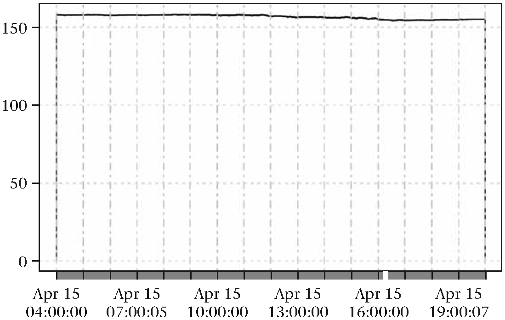
图8.1 含有异常值的SPY报价
由于SPY的主要交易所是Arca，我们将通过对数据框取子集来提取Arca交易所的报价。为Arca设计的交换代码为“P”, 只有价格和字段规模将在接下来的例子中使用：
spy_quotes_arca <- spy_quotes[spy_quotes$exchange %in% c("P"),
c("date", "time", "bid_price",
"ask_price", "bid_size", "ask_size")]下一步使把数据转化为xts对象，这需要一个合适的时间字段。
require(xts)
# 设定全局变量参数以达到毫秒级精度
options(digits.secs = 3)
time_index <- as.POSIXct(paste(spy_quotes_arca$date,
spy_quotes_arca$time), format = "%m/%d/%Y %H:%M:%OS")
spy <- xts(spy_quotes_arca[, -c(1, 2)], time_index)
rm(time_index)现在，我们得到一个xts时间序列对象，可以对数据做一些初步的筛选。买入价的线图显示如下：
plot(spy$bid_price, type = 'l',
main = "SPY bid price",
cex.main = 0.8,
cex.lab = 0.8,
cex.axis = 0.8)注意，时间序列的首尾对应着两个极端的价格，这是直接从Tick Data公司所提供的原始文件中读取ascii格式数据导致的。这张图提醒我们尽可能地针对数据进行可视化探索十分必要，对高频日内数据更是如此，此类数据操作产生的负面影响随处可见。我们必须尽早发现这类影响，并选择合适的方式加以处理。针对上述情况，解决方案相对简单，只需要删除零值即可。
spy_filtered <- spy[spy$bid_price > 0, ]下面的代码可以计算出删除了多少行：
rows_removed <- nrow(spy) - nrow(spy_filtered)
rows_removed
## [1] 2修正后的数据对应的图片看起来更美观：
plot(spy_filtered$bid_price, type = 'l',
main = "SPY filtered bid price",
cex.main = 0.8,
cex.lab = 0.8,
cex.axis = 0.8)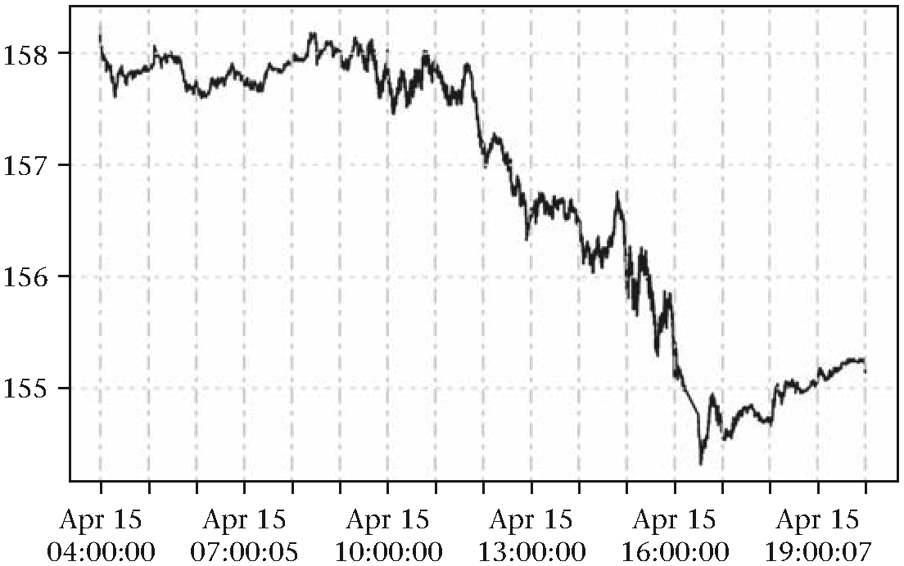
图8.2 过滤后的SPY报价
接下来，将对数据做进一步筛选以便于观察买入价、卖出价和卖出规模的分散特征。
summary(as.numeric(spy_filtered$ask_price))
## Min. 1st Qu. Median Mean 3rd Qu. Max.
## 154.3 156.1 156.7 156.8 157.7 158.9上述数值看起来很合理，下面是对规模数据的描述统计：
summary(as.numeric(spy_filtered$bid_size))
## Min. 1st Qu. Median Mean 3rd Qu. Max.
## 1.00 22.00 52.00 94.93 100.00 1565.00
summary(as.numeric(spy_filtered$ask_size))
## Min. 1st Qu. Median Mean 3rd Qu. Max.
## 1.0 24.0 59.0 110.8 118.0 1412.0这些数值看起来比较合理。下面，应该增加一些额外的过滤措施以确保在数据中既没有显著的差距也不存在交叉价格。一般而言，当任意时间点的买入价高于或等于卖出价时，就出现了交叉价格。
# 生成一个表示当买入价不低于卖出价的布尔值向量
crossed_prices <- spy_filtered$bid_price >=
spy_filtered$ask_price
any(crossed_prices)
## [1] FALSE内部报价更新时间
现在，我们将报价单顶部数据的任意变动定义为一个报价更新，以观察连续报价更新之间时间间隔的差异。
# 提取时间索引
quote_times <- index(spy_filtered)
# 计算连续时间差值
time_differences <- as.numeric(diff(quote_times))
summary(time_differences)
## Min. 1st Qu. Median Mean 3rd Qu. Max.
## 0.0000 0.0000 0.0010 0.0645 0.0100 1010.0000有相当多的报价更新时间间隔小于一毫秒，在处理日间数据时出现这种情况非常正常。当两个连续的报价更新时间间隔约为1010秒（16.8分钟）时，反而值得关注。接下来会进一步讨论这个问题。
# 定位可能异常的时间点
long_times <- which(time_differences > 1000)
long_times
## [1] 884312
# 展示异常时间点附近的数据
spy_abnormal <- spy_filtered[(long_times - 2):(long_times + 2), ]
## bid_price ask_price bid_size ask_size
## 2013-04-15 16:13:00.987 155.00 155.02 289 270
## 2013-04-15 16:13:01.256 155.00 155.02 290 270
## 2013-04-15 16:13:01.282 155.00 155.02 295 270
## 2013-04-15 16:29:50.869 154.76 154.79 3 3
## 2013-04-15 16:29:50.887 154.76 154.77 3 10从输出结果可以看出，在16：13：01.282至16:29:50.869期间没有发生任何交易。这是由于交易所收市、数据源订阅故障，还是单纯因为该时段为交易稀疏期？一个成功的数据过滤操作要求我们对这些问题有具体的答案。其它一些相关问题如下：
1.该金融产品在交易所中的开盘交易时间如何？
2.该金融产品对应的典型价格怎样？
3.交易所是否针对该金融产品规定了涨跌幅限制？
4.该金融产品的流动性如何？
5.交易所对应的节假日是怎样的？
在交易清淡期间，金融产品的报价更新时间间隔长达16分钟属于正常情况。想清楚判断某个异常值是否值得特殊重视，唯一的途径是利用关于该金融产品的先验知识和关于该类数据的常识性假设。
识别流动性机制
在接下来的部分里，我们将讨论关于高频SPY数据的一些统计特性。典型的流动性度量指标是买卖差价，买卖差价等于报价单顶部的买入价减去卖出价。运行下面的代码可以绘制全天的价差数据：
# 计算买卖差价
bid_ask_spread <- spy_filtered$ask_price -
spy_filtered$bid_price
# 过滤掉异常值
outliers <- which(bid_ask_spread > 0.25)
if(length(outliers) > 0) {
bid_ask_spread <- bid_ask_spread[-outliers, ]
}
# 绘制差价图
plot(bid_ask_spread, type = "l",
main = "Bid ask spread",
cex.main = 0.8,
cex.lab = 0.8,
cex.axis = 0.8)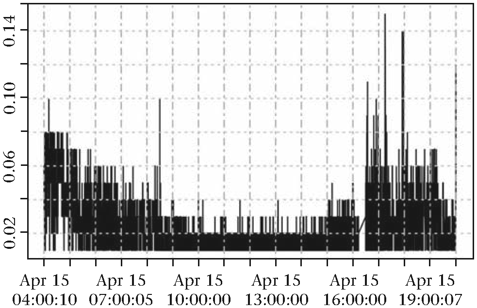
图8.3 SPY日内买卖价差图
该图显示SPY有三个不同的流动性形态。我们可据此将交易日大致划分为清晨时段，正常交易时段和下午时段，可以通过将数据适当的取子集以对各类价格的动态机制进行可视化。代码如下：
# 将SPY数据划分为三个时段
early_morning <- "2013-04-15 04:00:00::2013-04-15 08:29:00"
regular_trading <- "2013-04-15 08:30:00::2013-04-15 16:15:00"
after_hours <- "2013-04-15 16:15:01::2013-04-15 20:00:00"
# 为每一个时段绘制一个买卖差价直方图
par(mfrow = c(3, 1))
# 清晨时段
data <- bid_ask_spread[early_morning]
hist(data, main = early_morning, breaks = 1000,
xlim = c(0, 0.1))
abline(v = mean(data), lwd = 2, lty = 2)
# 下午时段
data <- bid_ask_spread[regular_trading]
hist(data, main = regular_trading, breaks = 1000,
xlim = c(0, 0.1))
abline(v = mean(data), lwd = 2, lty = 2)
# 夜间时段
data <- bid_ask_spread[after_hours]
hist(data, main = after_hours, breaks = 1000,
xlim = c(0, 0.1))
abline(v = mean(data), lwd = 2, lty = 2)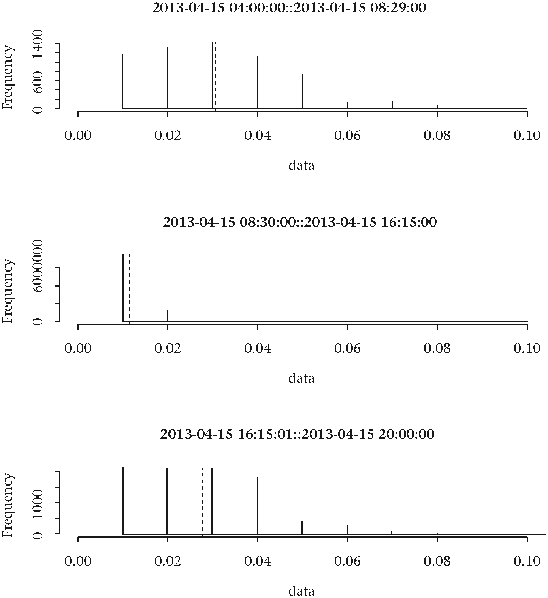
图8.4 SPY日内买卖价差直方图
鉴于第二个时段绝大多数价差都低于一个报价单位，故该时段对应的流动性最佳。接下来的分析重点将集中于该时段对应的流动性形态。
spy_day <- spy_filtered[regular_trading]上述数据隐含了大量的信息，考虑到该交易时段集中出现了大量交易行为，这一点也不意外。
市场微观价格
在某一给定时间点，如何确定股票对应的理论价格？遗憾的是该问题并无确切的答案。我们可以认为是买入价代表理论价格，也可以认为卖出价代表理论价格，但大多数市场参与者倾向于选择某个中间值，买卖中间价即是一个备选方案。但还有更好的选择吗？鉴于我们已经知道了价格和成交量信息，也可以用市场微观价格来作为真实理论价格的代替。微观价格是市场价格和交易量的加权平均值。如果我们承认报价单顶部的交易量也包含了包含市场关于报价的信息，那么，在推测理论价格是纳入这些信息也是合理的。例如，若买入价$ 150.00 对应额交易量为1000手，卖出价$ 150.01对应的交易量为1手。因此，理论价格理应位于买入价和卖出价之间，且该理论价格应该更接近卖出价，因为庞大的买入量产生了较大购买压力。市场微观价格相应的数学表达式和R代码如下：
(8.1)
spy_micro_price <- (spy_day$bid_price * spy_day$ask_size +
spy_day$ask_price * spy_day$bid_size) /
(spy_day$bid_size + spy_day$ask_size)如果忽略成交量的重要性（由于市场分割、隐藏流动性、或者报价单作弊行为），上述公式算出的理论价格将等于中间价格。
运行下面的代码，可以绘制微观价格与买卖价格的时序图：
par(mfrow = c(1, 1))
range <- 10000:10100
title <- "Micro-price between bid-ask prices"
plot(spy_day$ask_price[range],
ylim = c(min(spy_day$bid_price[range]),
max(spy_day$ask_price[range])),
main = title,
cex.main = 0.8,
cex.lab = 0.8,
cex.axis = 0.8)
lines(spy_day$bid_price[range])
lines(spy_micro_price[range], lty = 2)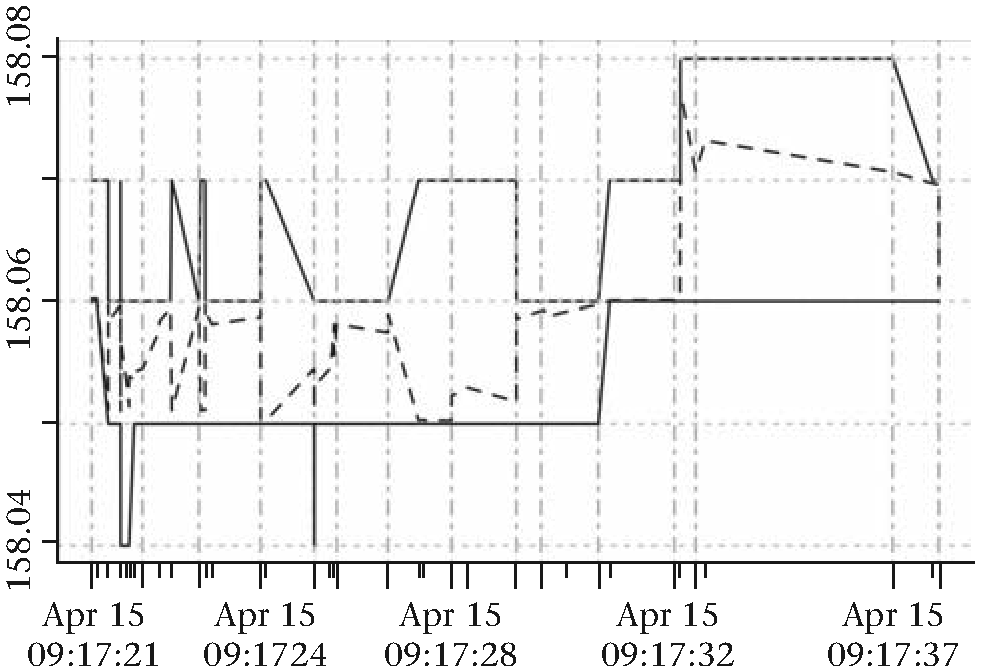
图8.5 SPY买卖价差之间的微观示意图
分布和自相关性
接下来，探索下市场微观价格的回报率的分布情况：
spy_returns <- diff(log(spy_micro_price))
par(mfrow = c(2, 1))
plot(spy_returns,
main = "Time series plot of micro-price returns",
cex.main = 0.8, cex.lab = 0.8, cex.axis = 0.8)
hist(spy_returns, breaks = 1000,
main = "Micro-price distribution",
cex.main = 0.8, cex.lab = 0.8, cex.axis = 0.8)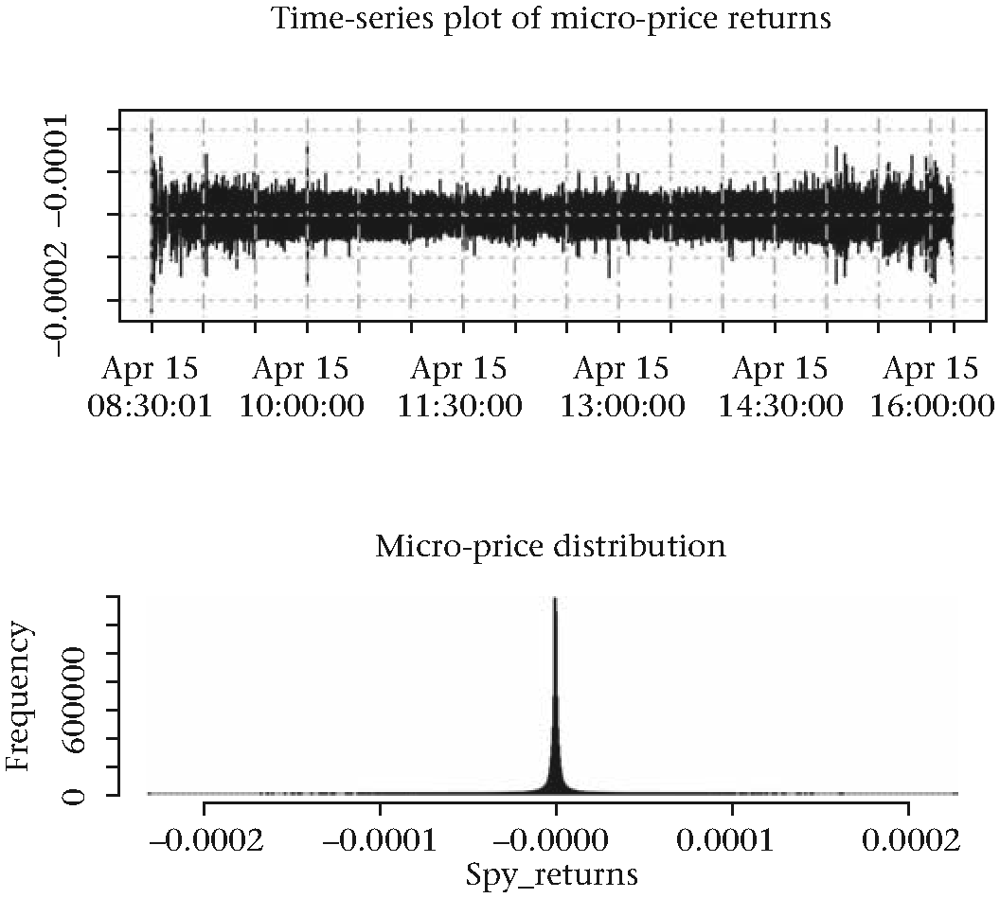
图8.6 SPY微观价格分布图
注意，收益率直方图显示有显著的尖峰特征。相比拥有同样均值和方差的正态分布，其拥有更多相对较小的取值。我们可以像之前一样，在上图中叠加正态分布的直方图来可视化上述差异。
par(mfrow = c(1, 1))
mean_spy <- mean(as.numeric(spy_returns), na.rm = TRUE)
sd_spy <- sd(as.numeric(spy_returns), na.rm = TRUE)
hist(spy_returns, breaks = 10000, prob = TRUE,
xlim = c(-0.00003, 0.00003),
main = "Micro-price distribution vs. Normal",
cex.main = 0.8,
cex.lab = 0.8,
cex.axis = 0.8)
curve(dnorm(x, mean_spy, sd_spy), add = TRUE,
yaxt = "n", lwd = 3, lty = 3)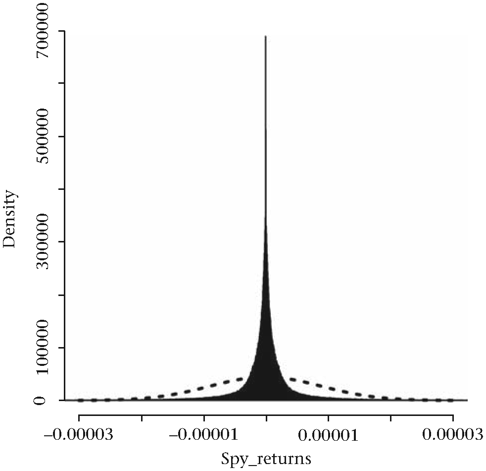
图8.7 叠加正态分布的微观价格分布图
高频数据对应收益率的自相关性如何？不妨回想一下日收益的情况，日收益数据在时滞大于1时不存在显著的自相关性。
spy_acf <- acf(as.numeric(spy_returns),
na.action = na.pass,
main = "Autocorrelation",
cex.main = 0.8,
cex.lab = 0.8,
cex.axis = 0.8)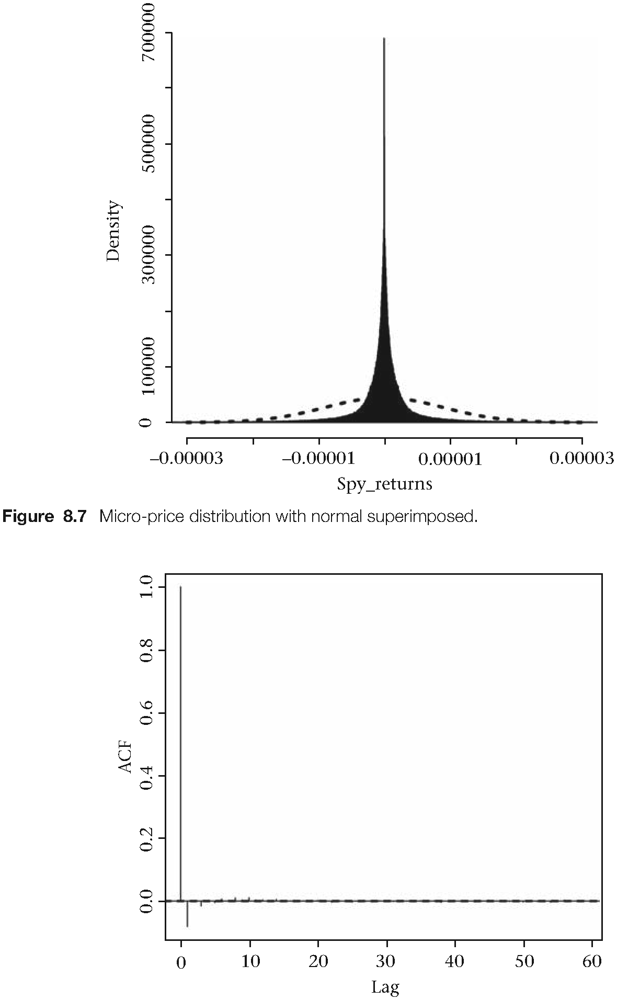
图8.8 微观价格收益率的自相关图
在时滞为1时存在轻微的负相关。微观价格平滑了位于买卖价差之间的反弹效应。如果将上述数据替换为买入价，则反弹效应会更加明显。通过分析SPY连续交易数据的自相关性，可以更好的观察到反弹效应。原因在于做市商和其他自营机构企图捕获每笔报价收益的行为导致大量成交价介于买入价和卖出价之间。市场价格在买卖价格之间如此往复运动，加上SPY最低报价单位不能低于0.01所导致的价格变动的离散属性，共同引发了这种人为导致的自相关性现象。
# 为我们的逐笔交易数据获取SPY的交易价格
spy_trades_file <- "path/SPY_2013_04_15_X_T.asc"
spy_trades <- read.csv(file = spy_trades_file,
header = FALSE, stringsAsFactors = FALSE)
names(spy_trades) <- c("date", "time", "price",
"volume", "exchange", "sales_condition",
"correction_indicator", "sequence_number",
"trade_stop_indicator", "source_of_trade", "trf",
"exclude_record_flag", "filtered_price")
# 只提取出ARCA交易部分数据
spy_trades_arca <- spy_trades[spy_trades$exchange %in% c("P"),
c("date", "time", "price", "volume", "correction_indicator",
"filtered_price")]
# 检查是否存在过滤价格
any(!is.na(spy_trades_arca$filtered_price))
## [1] FALSE
# 检查是否存在特别更正指示数据
unique(spy_trades_arca$correction_indicator)
## [1] 0
# 从数据框中丢弃最后两列数据
spy_trades_arca <- spy_trades_arca[, 1:4]
# 为下面的分析将数据转换为xts对象
time_index <- as.POSIXct(paste(spy_trades_arca$date,
spy_trades_arca$time), format = "%m/%d/%Y %H:%M:%OS")
spy_t <- xts(spy_trades_arca[, -c(1, 2)], time_index)
rm(time_index)
# 前6个数据
head(spy_t)
## price volume
## 2013-04-15 04:00:00.697 158.25 100
## 2013-04-15 04:00:00.697 158.24 200
## 2013-04-15 04:00:00.697 158.15 150
## 2013-04-15 04:01:42.190 158.06 200
## 2013-04-15 04:07:16.545 157.94 100
## 2013-04-15 04:12:45.265 157.92 10000
# 取常规交易时间段的数据子集
regular_trading <- "2013-04-15 08:30:00::2013-04-15 16:15:00"
spy_t_day <- spy_t[regular_trading]
# 检视交易数据量
dim(spy_t_day)
## [1] 93197 2
# 检查已占用内存大小
object.size(spy_t_day)
## [1] 2239080 bytes我们已成功地将517516条交易数据过滤到93197条，Spy_t_day对象占用将近22.4MB的内存。下面看下连续交易的自相关性：
# 计算收益率
spy_t_day_returns <- diff(log(spy_t_day$price))[-1]
# 绘制分布图和自相关函数图
par(mfrow = c(2, 1))
plot(spy_t_day_returns, main = "SPY returns on trades",
cex.main = 0.8, cex.lab = 0.8, cex.axis = 0.8)
acf(as.numeric(spy_t_day_returns), main = "SPY trades acf",
cex.main = 0.8, cex.lab = 0.8, cex.axis = 0.8)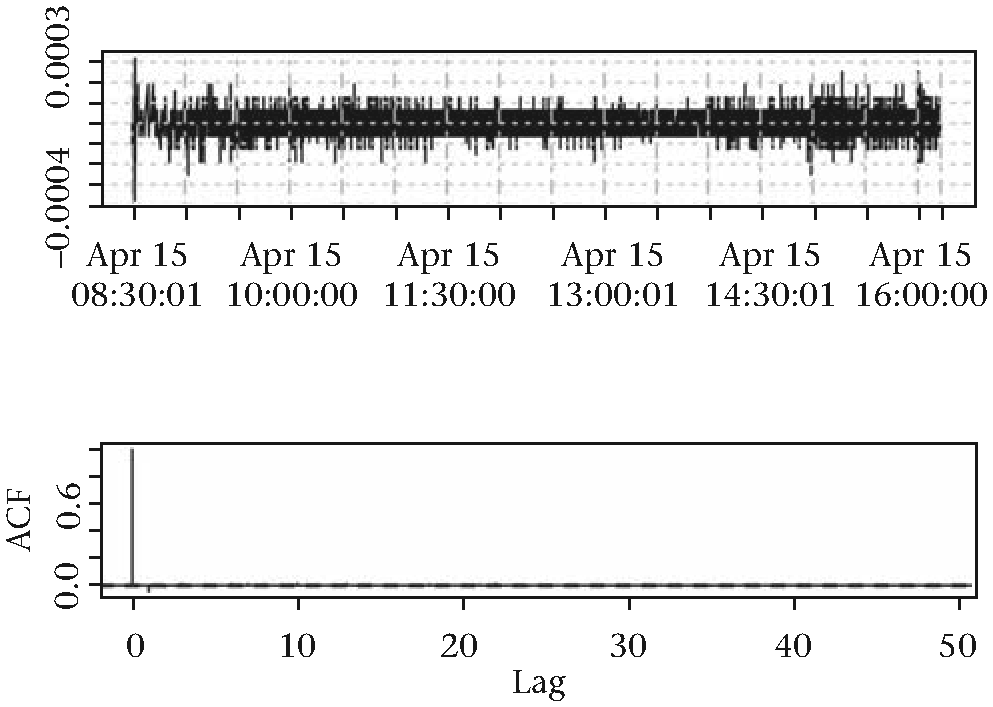
图8.9 交易价格收益率的自相关图
运行下面的代码，可以在收益率直方图上叠加上正态分布：
# 交易收益率的分布图
par(mfrow = c(1, 1))
hist(spy_t_day_returns, breaks = 1000, prob = TRUE,
xlim = c(-0.0001, 0.0001),
main = "Distribution of SPY trade returns",
cex.main = 0.8,
cex.lab = 0.8,
cex.axis = 0.8)
curve(dnorm(x, mean(spy_t_day_returns),
sd(spy_t_day_returns)),
add = TRUE,
yaxt = "n",
lwd = 3,
lty = 3)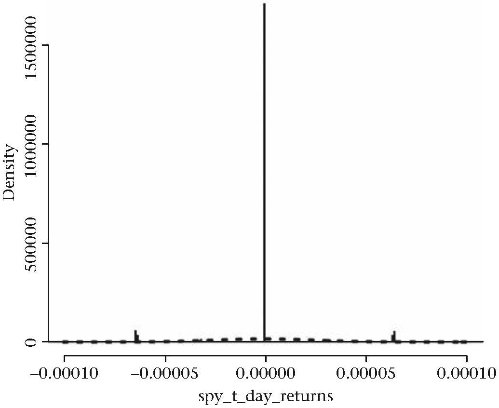
图8.10 交易价格的收益率直方图
有趣的是，大量交易成交在统一价格水平附近，图表上中，0点位置呈现明显的钉型。钉尖高度远超y轴，从而导致其他数据都显示在图形边缘。当我们观察出现在不同价格的交易时会如何？可以根据价格水平对交易量进行汇总，再观察各价格水平上的交易情况，如此一来，可以有效的保存交易量包含的信息。
# 使用rle()函数找到价格序列
prices_rle <- rle(as.numeric(spy_t_day$price))
# 下面是我们想要保留的行索引
end_indexes <- cumsum(prices_rle$lengths)
# 下面是我们汇总交易量的时候想要的起始时间索引
start_indexes <- end_indexes - prices_rle$lengths + 1
# 为每一个价格创建一个总交易量的向量
volume_list <- list()
volume_vector <- as.numeric(spy_t_day$volume)
for (i in 1:length(end_indexes)) {
volume_list[[i]] <- sum(volume_vector[start_indexes[i]:
end_indexes[i]], na.rm = TRUE)
}
# 创建一个包含独一价格的简化数据集
spy_t_day_reduced <- spy_t_day[end_indexes, ]
spy_t_day_reduced$volume <- unlist(volume_list)下面是一个输出的例子：
head(spy_t_day_reduced, 10)
## price volume
## 2013-04-15 08:30:01.964 158.17 510
## 2013-04-15 08:30:02.783 158.15 1000
## 2013-04-15 08:30:04.930 158.14 340
## 2013-04-15 08:30:11.964 158.12 100
## 2013-04-15 08:30:23.763 158.11 1100
## 2013-04-15 08:30:29.739 158.10 1720
## 2013-04-15 08:30:31.963 158.09 200
## 2013-04-15 08:30:45.164 158.08 4995
## 2013-04-15 08:30:46.888 158.07 100
## 2013-04-15 08:30:46.970 158.06 3330
head(spy_t_day, 10)
## price volume
## 2013-04-15 08:30:01.964 158.17 100
## 2013-04-15 08:30:01.964 158.17 410
## 2013-04-15 08:30:02.783 158.15 1000
## 2013-04-15 08:30:04.930 158.14 340
## 2013-04-15 08:30:11.964 158.12 100
## 2013-04-15 08:30:23.763 158.11 1000
## 2013-04-15 08:30:23.763 158.11 100
## 2013-04-15 08:30:28.153 158.10 400
## 2013-04-15 08:30:28.529 158.10 320
## 2013-04-15 08:30:29.739 158.10 180我们可以基于过滤后的交易价格数据探索更多关于分布和自相关性的指标。
# 识别出每天中最多交易的价格
hist(as.numeric(spy_t_day_reduced$price), breaks = 200,
main = "Histogram of traded prices for SPY on 2013-04-15",
cex.main = 0.8,
cex.lab = 0.8,
cex.axis = 0.8)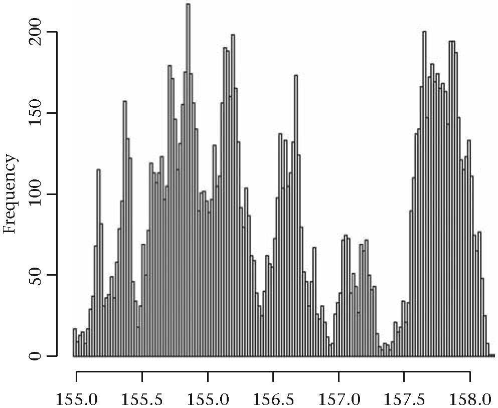
图8.11 价格水平直方图
但别期望找到任何特别的地方。聚类是另一种识别大量交易行为对应价格的方法。
下图显示出不同连续价格对应的收益率的自相关特征：
acf(diff(log(as.numeric(spy_t_day_reduced$price))),
main = "Autocorrelation of trades",
cex.main = 0.8,
cex.lab = 0.8,
cex.axis = 0.8)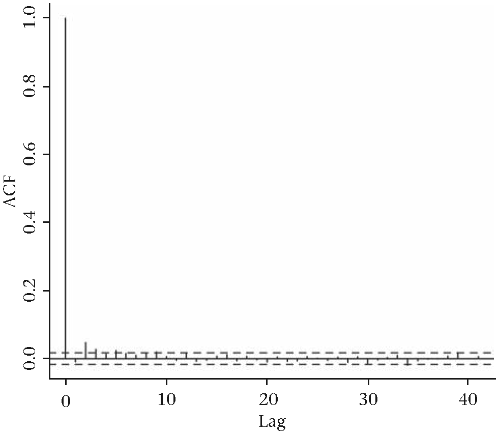
图8.12 交易价格收益率的自相关图
在滞后阶数为2的时候存在微弱的正相关性，但在拟合自回归模型之前很难断定是否显著。某笔交易是由买方发起还是由卖方发起是另一个经常问到的问题。交易记录通常包括交易时间、交易价格和交易数量等信息，但并未包含交易发起方的信息。我们可以通过融合交易数据和市场数据来推测该信息。推测结果未必百分之百精确，但它可作为一个合理的近似值。
Lee和Readay曾在1991年建议将在买价单上出现的交易归为买方发起类交易；把出现为卖价单上的交易归为卖方发起类交易。这需要对报价和交易数据订阅进行适当的时间戳调整。过去很难做到这一点，如今，我们可以获取更为精确的时间戳信息，因此这一操作也更为容易。自那时起，Lee和Ready提出的算法不断发展［69］。了解流动性提供者和适应者的行为非常有价值，面对日内高频数据时尤其如此。说到检测信息流的流动性问题，VPIN模型（信息交易同步概率）是一个试图量化该流动性的例子。该模型的其中一个输入参数即是判断大宗交易由买方还是卖方发起的［26，144］。
收益率的连续滞后数据之间是否存在非线性关系是另外一个我们试图从数据中解决的问题。我们可以尝试建立一个连续收益率数据与其连续相应滞后阶数的散点图，然后观察点的轨迹如何随时间移动。对于随机的数据而言，会看不到没有明显的时间关系，大部分点将随机的靠近或者远离簇点。
# 在滞后为1附近簇集的随机收益率
n <- rnorm(50, 0, .20)
n_lag1 <- c(NA, n[-length(n)])
plot(n_lag1, n)
# 在点之间生成箭头
s <- seq(length(n)-1)
arrows(n_lag1[s], n[s], n_lag1[s+1], n[s+1])运行下面的代码可以看到，在真实数据中，数据点会先集中在图形边缘，之后缓慢集中到中心点。
# 簇集在滞后1处的SPY收益率
spy_t_returns <- diff(log(as.numeric(
spy_t_day_reduced$price[100:150])))
spy_t_returns_lag1 <- c(NA, spy_t_returns[
-length(spy_t_returns)])
plot(spy_t_returns_lag1, spy_t_returns)
s <- seq(length(spy_t_returns)-1)
arrows(spy_t_returns_lag1[s], spy_t_returns[s],
spy_t_returns_lag1[s+1], spy_t_returns[s+1])highfrequency包
到现在为止，我们已经创建了一些用于探索高频数据特征的函数。highfrequency包提供了一些实用的函数来处理此类问题，该包由Jonathan Cornelissen, Kris Boudt和Scott Payseur创建。包的主要功能包括：
- 整合价格、报价和交易数据，
- 逐笔交易数据的清洗，
- 测量流动性，
- 估计和预测波动率，
- 微观结构噪音分析和日内周期性分析。
highfrequency包基于xts包的框架来处理对应的高频时间序列数据。这将使数据处理工作变的更简单，比较容易让人适应。运行下面的代码可以安装最新的版本：
library("devtools")
install_github("highfrequency", "jonathancornelissen")关于highfrequency包的内容可以参考尾注[7]。
总结
本章重点研究日内高频数据的动态机制。前文中的讨论和代码示例所对应的数据都从网上免费下载得到。此外，还探讨了特殊供应商对日内数据格式化的框架以及针对原始数据的过滤。基于逐笔交易数据探讨了报价更新时间间隔的数据。我们还分析了高频收益率的分布特征并对日内买卖差价进行了可视化。讲解了微观价格的概念，其作为理论价格计算方式之一，总是介于相应金融产品买卖报价之间。提出了一个探索不同时间点之间非线性关系的方法，并提供了一个生成买方-卖方发起交易指标的典型应用作为示例。最后，我们简要介绍了highfrequency包的功能和安装。
翻译：邓一硕 审校：冯凌秉